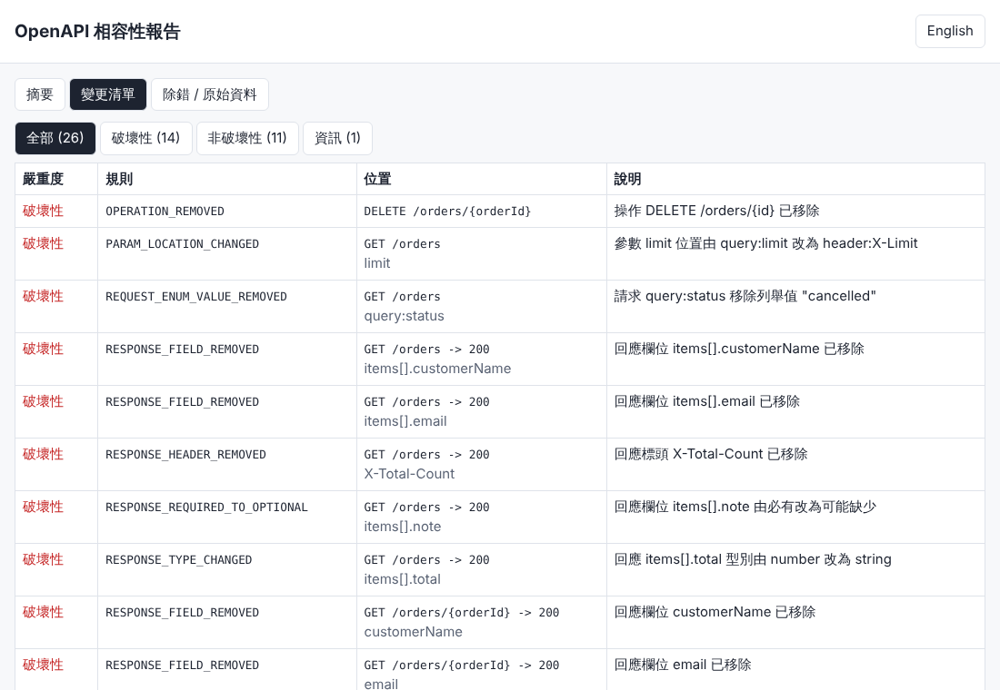
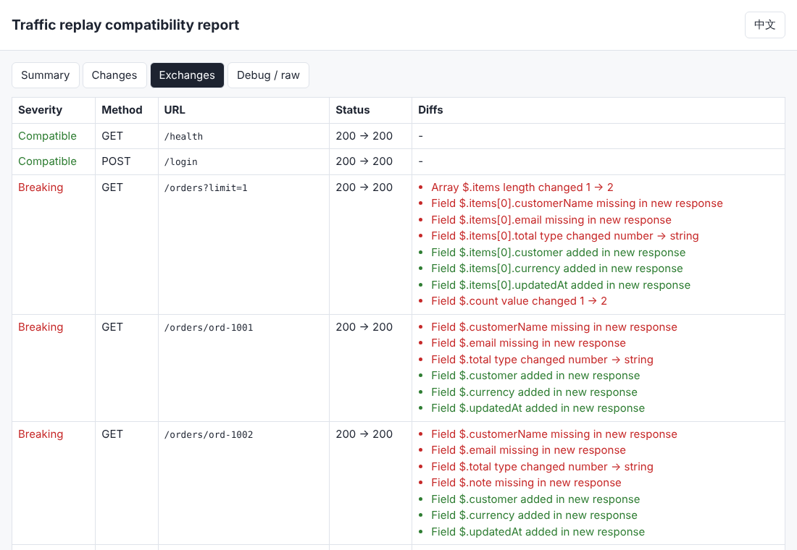
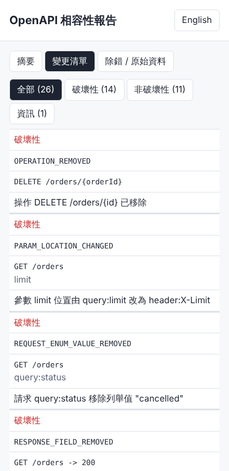

概覽
需求原則：改寫程式時，對外 Web API 的輸入與輸出必須跟原本的呼叫相容。apiguard 用兩種互補的方式在上線前抓出破壞性變更：
- OpenAPI 差異比對（
apiguard diff）：比較舊/新兩份 OpenAPI 3.x（JSON 或 YAML，會解析$ref，含跨檔案參照），每個變更依規則表分為 破壞性 BREAKING、非破壞性 NON_BREAKING、資訊 INFO。 - 流量錄製與重播（
apiguard record/apiguard replay）：不需要 OpenAPI。錄製代理放在舊服務前面，把真實的請求/回應存成 JSONL（先遮罩 Authorization、Cookie 與設定的 JSON 欄位）；之後把同樣的請求送到新服務，以結構方式比較狀態碼、標頭、JSON 欄位與型別、值（時間戳、UUID、指定路徑可忽略）。 - Mock 伺服器（
apiguard mock）：用 OpenAPI 的 example 產生假服務，讓前端/客戶端先對新規格開發。
輸出格式：主控台、JSON、Markdown、自含式 HTML 報告（可切換 中文/English，含「除錯 / 原始資料」分頁）。發現破壞性變更時結束代碼為 1，可直接放進 CI。
| 結束代碼 | 意義 |
|---|---|
| 0 | 相容（或使用 --fail-on none） |
| 1 | 發現至少一個破壞性變更 |
| 2 | 參數錯誤、檔案讀不到、規格無效等執行失敗 |
檔案結構
12-api-compat-guard/
src/cli.js CLI 進入點（diff / record / replay / mock / rules）
src/openapi/load.js 讀取 JSON/YAML、解析 $ref（含循環參照保護）
src/openapi/diff.js 規格比對
src/openapi/rules.js 相容性規則表（單一事實來源）
src/traffic/proxy.js 錄製用反向代理
src/traffic/redact.js 遮罩（寫檔前執行）
src/traffic/replay.js 重播
src/traffic/compare.js 回應結構比對 + 忽略規則
src/report/render.js console / json / md / html 報告
src/mock/server.js OpenAPI example Mock 伺服器
demo/old-api, demo/new-api 示範用訂單 API（v1 / v2 改寫版）
demo/openapi-v1.yaml, demo/openapi-v2.yaml, demo/common.yaml, demo/apiguard.config.json
examples/ 範例報告、錄製檔、截圖
test/ 單元測試、端對端測試、Playwright 報告測試
*.bat + apiguard.ps1 Windows 啟動器相容性規則表
原則：請求端要「舊客戶端送得出去的東西，新服務仍然接受」；回應端要「舊客戶端讀得到、看得懂的東西，新服務仍然給」。規則定義在 src/openapi/rules.js，可用 node src/cli.js rules 列出。
OpenAPI diff 規則（apiguard diff）
| 規則 ID | 嚴重度 | 範例 | 為什麼 |
|---|---|---|---|
PATH_REMOVED | 破壞性 | DELETE /orders/{id} 整個路徑消失 | 舊客戶端呼叫會得到 404。 Existing clients get 404. |
OPERATION_REMOVED | 破壞性 | DELETE /orders/{id} removed | 舊客戶端呼叫會得到 404/405。 Existing clients get 404/405. |
PATH_ADDED | 非破壞性 | GET /orders/{id}/history | 新增功能不影響舊客戶端。 Additive. |
OPERATION_ADDED | 非破壞性 | PATCH /orders/{id} | 新增功能不影響舊客戶端。 Additive. |
OPERATION_DEPRECATED | 資訊 | deprecated: true | 目前仍可用，但應規劃遷移。 Still works; plan migration. |
OPERATION_ID_CHANGED | 資訊 | listOrders -> getOrders | 線上呼叫不受影響，但產生的 SDK 方法名稱會變。 Wire-compatible, but generated SDK method names change. |
PARAM_REMOVED | 資訊 | query ?expand removed | 客戶端仍送出時通常被忽略，但行為可能改變。 Usually ignored when still sent, but behaviour may change. |
PARAM_ADDED_REQUIRED | 破壞性 | header X-Tenant required | 舊客戶端沒有送這個參數，請求會被拒絕。 Old clients do not send it; requests are rejected. |
PARAM_ADDED_OPTIONAL | 非破壞性 | query ?sort | 不送也可以。 Can be omitted. |
PARAM_BECAME_REQUIRED | 破壞性 | limit required: false -> true | 沒有送此參數的舊客戶端會失敗。 Clients omitting it now fail. |
PARAM_BECAME_OPTIONAL | 非破壞性 | required: true -> false | 放寬限制。 Relaxed. |
PARAM_LOCATION_CHANGED | 破壞性 | query limit -> header X-Limit | 客戶端仍送到舊位置，伺服器讀不到。 Clients still send it in the old location. |
REQUEST_BODY_BECAME_REQUIRED | 破壞性 | requestBody.required: true | 未送本文的舊客戶端會失敗。 Clients without body fail. |
REQUEST_MEDIA_TYPE_REMOVED | 破壞性 | application/xml removed | 以該格式送出的請求會得到 415。 Requests in that format get 415. |
REQUEST_FIELD_ADDED_REQUIRED | 破壞性 | POST /orders 需要 currency | 舊客戶端不會送此欄位，驗證失敗。 Old clients do not send it; validation fails. |
REQUEST_FIELD_ADDED_OPTIONAL | 非破壞性 | couponCode? | 可省略。 Can be omitted. |
REQUEST_FIELD_BECAME_REQUIRED | 破壞性 | note -> required | 省略此欄位的舊客戶端會失敗。 Clients omitting it fail. |
REQUEST_FIELD_REMOVED | 資訊 | legacyCode removed | 若伺服器拒絕未知欄位（additionalProperties: false）則會失敗。 Fails if the server rejects unknown fields. |
REQUEST_TYPE_CHANGED | 破壞性 | qty: integer -> string | 舊客戶端送出的值不再符合型別。 Values sent by old clients no longer validate. |
REQUEST_ENUM_VALUE_REMOVED | 破壞性 | status=cancelled 不再接受 | 舊客戶端仍可能送出此值。 Old clients may still send it. |
REQUEST_ENUM_VALUE_ADDED | 非破壞性 | status=refunded | 放寬限制。 Relaxed. |
REQUEST_CONSTRAINT_TIGHTENED | 破壞性 | maxLength 100 -> 50 | 以前合法的值現在會被拒絕。 Previously valid values are rejected. |
RESPONSE_STATUS_REMOVED | 破壞性 | 201 -> 200 | 客戶端依狀態碼判斷成功（例如 201），改了就判斷錯。 Clients branch on the status code (e.g. 201). |
RESPONSE_STATUS_REMOVED_ERROR | 資訊 | 409 removed | 錯誤處理路徑可能不同，請確認。 Error handling path may differ. |
RESPONSE_STATUS_ADDED | 非破壞性 | 429 added | 一般客戶端可處理；若是新的 2xx 請留意。 Usually fine. |
RESPONSE_MEDIA_TYPE_REMOVED | 破壞性 | application/json removed | 要求該格式的客戶端解析失敗。 Clients expecting it fail to parse. |
RESPONSE_FIELD_REMOVED | 破壞性 | customerName removed | 讀取該欄位的客戶端拿到 undefined/null。 Clients reading it get undefined. |
RESPONSE_FIELD_ADDED | 非破壞性 | currency added | 客戶端應忽略未知欄位（嚴格反序列化者除外）。 Clients should ignore unknown fields. |
RESPONSE_TYPE_CHANGED | 破壞性 | total: number -> string | 強型別客戶端（C# DTO 等）反序列化失敗。 Typed clients (C# DTOs etc.) fail to deserialize. |
RESPONSE_REQUIRED_TO_OPTIONAL | 破壞性 | note required -> optional | 客戶端假設一定存在，缺少時會出錯。 Clients assume it is always present. |
RESPONSE_OPTIONAL_TO_REQUIRED | 非破壞性 | email optional -> required | 保證更強。 Stronger guarantee. |
RESPONSE_BECAME_NULLABLE | 破壞性 | nullable: true | 客戶端未處理 null。 Clients may not handle null. |
RESPONSE_ENUM_VALUE_ADDED | 資訊 | status: refunded | 用 switch 窮舉的客戶端可能無法處理新值。 Exhaustive switches may not handle it. |
RESPONSE_ENUM_VALUE_REMOVED | 非破壞性 | status: cancelled | 回應值域變小，客戶端仍可處理。 Narrower output; clients still cope. |
RESPONSE_HEADER_REMOVED | 破壞性 | X-Total-Count removed | 讀取該標頭的客戶端（如分頁 X-Total-Count）失效。 Clients reading it break. |
FORMAT_CHANGED | 資訊 | int32 -> int64 | 型別相同但格式不同（如 int32 -> int64），請確認客戶端解析。 Same type, different format. |
SECURITY_ADDED | 破壞性 | security: [bearer] | 原本匿名呼叫的客戶端會得到 401。 Anonymous clients get 401. |
流量重播比對規則（apiguard replay）
| 規則 ID | 嚴重度 | 說明 |
|---|---|---|
STATUS_CHANGED | 破壞性 | 狀態碼由 … 變成 … Status changed … -> … |
REQUEST_FAILED | 破壞性 | 無法呼叫新服務：… Request to new service failed: … |
HEADER_MISSING | 破壞性 | 缺少回應標頭 … Response header … missing |
HEADER_CHANGED | 破壞性 | 回應標頭 … 由 … 變成 … Response header … changed … -> … |
BODY_KIND_CHANGED | 破壞性 | 回應本文格式由 … 變成 … Body kind changed … -> … |
FIELD_MISSING | 破壞性 | 欄位 … 在新回應中消失 Field … missing in new response |
FIELD_ADDED | 非破壞性 | 新回應多了欄位 … Field … added in new response |
TYPE_CHANGED | 破壞性 | 欄位 … 型別由 … 變成 … Field … type changed … -> … |
NULL_TO_VALUE | 資訊 | 欄位 … 由 null 變成有值（…） Field … was null, now … |
VALUE_CHANGED | 破壞性 | 欄位 … 值由 … 變成 … Field … value changed … -> … |
ARRAY_LENGTH_CHANGED | 破壞性 | 陣列 … 長度由 … 變成 … Array … length changed … -> … |
型別相容性：請求端 integer → number 視為放寬（非破壞性）；回應端 integer → number 視為破壞性（強型別客戶端如 C# int 無法接收小數）。OpenAPI 3.0 的 nullable: true 與 3.1 的 type: [string, "null"] 都會被辨識。allOf 會先合併再比較。路徑參數改名（/orders/{id} → /orders/{orderId}）不算變更。
快速開始
需求：Node.js 20 以上（已在 Node 22.23.4 驗證）。唯一的執行期相依套件是 yaml（版本鎖定 2.9.1）。
Windows（繁體中文環境）
- 安裝 Node.js LTS（nodejs.org）。
- 在檔案總管進入
12-api-compat-guard資料夾，雙擊setup.bat（執行 npm install）。 - 雙擊
run-demo.bat：自動啟動 v1/v2 示範服務、錄製、重播並產生報告到%ProgramData%\NewMiscCode\12-api-compat-guard\demo\。視窗最後會顯示結束代碼。 - 雙擊
run-tests.bat執行全部測試；diff-demo.bat只做規格比對並產生 HTML 報告。 - 任意指令：在命令提示字元執行
apiguard.bat diff old.yaml new.yaml --format html。
啟動鏈：.bat（純 ASCII + CRLF）→ apiguard.ps1（UTF-8 with BOM）→ node。設定環境變數 APIGUARD_NO_PAUSE=1 可讓 .bat 結束時不暫停（給排程或 CI 使用）。
Linux / macOS
cd 12-api-compat-guard
npm install
npm test # 全部測試
npm run demo # 一鍵示範，報告寫到 ./data/demo/
npm run diff:demo # 只比對 demo/openapi-v1.yaml 與 v2
node src/cli.js diff demo/openapi-v1.yaml demo/openapi-v2.yaml --out report.html使用說明
共用選項：--lang zh-TW|en（預設 zh-TW，也可用環境變數 APIGUARD_LANG）、--config 檔案（預設讀取目前目錄的 apiguard.config.json）、--data-dir 路徑、--debug、--fail-on breaking|none。
diff：比對兩份 OpenAPI
node src/cli.js diff old.yaml new.yaml # 主控台輸出
node src/cli.js diff old.yaml new.json --out report.html # 依副檔名決定格式（.html/.md/.json）
node src/cli.js diff old.yaml new.yaml --format md --out diff.md --lang en
node src/cli.js diff old.yaml new.yaml --fail-on none # 只產報告，不讓 CI 失敗只指定 --format html 而不給 --out 時，報告寫到資料夾下的 reports/。
record：錄製舊服務的流量
node src/cli.js record --target http://127.0.0.1:3001 --port 9000 --out recordings.jsonl把客戶端（或整合測試、Postman、前端開發環境）的 base URL 改成 http://127.0.0.1:9000，所有請求會轉送到舊服務，回應原封不動回給客戶端，同時寫入 JSONL（每行一筆 request/response）。按 Ctrl+C 結束。上游可以是 https。
遮罩在寫檔之前執行：預設遮罩標頭 authorization、proxy-authorization、cookie、set-cookie、x-api-key、x-auth-token；查詢參數 access_token、api_key、apikey、token、password；JSON 路徑 $..password、$..token、$..accessToken、$..refreshToken、$..secret。可在設定檔 redact 改寫。
replay：重播到新服務並比較
node src/cli.js replay recordings.jsonl --to http://127.0.0.1:3002 --out replay.html
node src/cli.js replay recordings.jsonl --to http://new --header "Authorization: Bearer xxx"
node src/cli.js replay recordings.jsonl --to http://new --array-order ignore --no-values請求依錄製順序逐筆送出（保留有狀態 API 的先後關係）。已遮罩的標頭不會送出，需要驗證時用 --header 或設定檔的 replay.injectHeaders（支援 ${環境變數}）。若狀態碼類別不同（例如 201 → 400），只回報狀態碼差異，不再比較本文以免雜訊。
忽略規則與設定檔（apiguard.config.json）
{
"lang": "zh-TW",
"failOn": "breaking",
"dataDir": "D:\\apiguard-data",
"redact": {
"headers": ["authorization", "cookie", "set-cookie", "x-api-key"],
"query": ["access_token", "api_key", "token"],
"jsonPaths": ["$..password", "$..token", "$.payment.cardNumber"]
},
"record": { "target": "http://127.0.0.1:3001", "port": 9000, "exclude": ["^/favicon\\.ico"] },
"replay": {
"to": "http://127.0.0.1:3002",
"headers": ["content-type"],
"compareValues": true,
"arrayOrder": "strict",
"ignoreTimestamps": true,
"ignoreUuids": true,
"ignorePaths": ["$..updatedAt"],
"skipPaths": ["$.debugInfo"],
"statusClassMismatchSkipsBody": true,
"injectHeaders": { "Authorization": "Bearer ${APIGUARD_REPLAY_TOKEN}" },
"rules": [
{ "match": "POST /orders", "ignorePaths": ["$.id", "$.createdAt"] },
{ "match": "GET /reports/**", "compareValues": false }
]
}
}| 設定 | 說明 |
|---|---|
headers | 要比對的回應標頭子集合（content-type 只比 media type，忽略 charset）。 |
compareValues | false 時只比結構與型別，不比值、不比陣列長度。 |
arrayOrder | strict（依索引比較）或 ignore（先以正規化 JSON 排序再比較）。 |
ignoreTimestamps / ignoreUuids | 兩邊都是 ISO 8601 時間 / UUID 時視為相同值。 |
ignorePaths | JSONPath：忽略值，但仍檢查欄位存在與型別。 |
skipPaths | JSONPath：整個略過（不檢查存在、型別、值）。 |
rules[].match | "METHOD /path"，* 比對一段路徑，** 比對任意多段；符合時合併該規則的設定。 |
支援的 JSONPath 子集：$.a.b、$.items[*].id、$.items[0]、$..id（任意深度）、$.*。
mock：由 OpenAPI 範例產生 Mock 伺服器
node src/cli.js mock demo/openapi-v2.yaml --port 4010依路徑樣板比對請求，回傳第一個 2xx 回應的 example / examples，沒有範例時依 schema 產生假資料。
CI 範例
GitHub Actions：
- uses: actions/setup-node@v4
with: { node-version: 22 }
- run: npm ci
working-directory: 12-api-compat-guard
- name: API compatibility gate
working-directory: 12-api-compat-guard
run: |
node src/cli.js diff ../contracts/openapi-released.json ../build/openapi.json --out apiguard-report.html --lang zh-TW
- uses: actions/upload-artifact@v4
if: always()
with: { name: apiguard-report, path: 12-api-compat-guard/apiguard-report.html }Azure DevOps / 一般 Windows agent（cmd）：
set APIGUARD_NO_PAUSE=1
call apiguard.bat diff contracts\openapi-released.json build\openapi.json --out apiguard-report.html
if errorlevel 1 exit /b 1結束代碼 1 會讓 pipeline 失敗；若想先觀察一段時間，加 --fail-on none。
逐步驗證指南
以下步驟使用內附的示範：demo/old-api（v1）與 demo/new-api（v2 改寫版）。v2 刻意做了這些變更：
- 破壞性：
total由 number 改成字串；customerName/email移到customer物件；note空字串時省略；POST /orders新增必填currency且 201 → 200；DELETE /orders/{id}移除；limit由查詢參數改成X-Limit標頭；狀態篩選不再接受cancelled；拿掉X-Total-Count標頭。 - 非破壞性：新增
currency、updatedAt欄位；新增GET /orders/{orderId}/history；新增選填sort參數。
步驟 1：執行自動測試
npm test # Windows：run-tests.bat預期：# pass 73、# fail 0。測試包含每條 diff 規則、$ref 解析、遮罩（秘密不得出現在錄製檔與日誌）、重播比對與忽略規則、端對端（真的啟動 v1/v2 與錄製代理 CLI）、Playwright 開啟 HTML 報告。
步驟 2：規格比對
npm run diff:demo # Windows：diff-demo.bat預期最後兩行：
-- 破壞性: 14 非破壞性: 11 資訊: 1
發現破壞性變更：不可直接上線結束代碼為 1。其中應包含 OPERATION_REMOVED DELETE /orders/{orderId}、PARAM_LOCATION_CHANGED（limit → X-Limit）、RESPONSE_TYPE_CHANGED（total number → string）、REQUEST_FIELD_ADDED_REQUIRED（currency）、RESPONSE_STATUS_REMOVED（201）。

步驟 3：錄製與重播（手動，四個終端機）
- 終端機 A：
npm run demo:old→ 顯示old-api (v1) listening on http://127.0.0.1:3001 - 終端機 B：
npm run demo:new→ 顯示new-api (v2) listening on http://127.0.0.1:3002 - 終端機 C：
node src/cli.js record --config demo/apiguard.config.json --out data/rec.jsonl→ 顯示「錄製代理已啟動：http://127.0.0.1:9000 -> http://127.0.0.1:3001」 - 終端機 D：
node demo/traffic.js http://127.0.0.1:9000→ 8 行，狀態碼依序 200、200、200、200、200、201、200、204。 - 終端機 C 按 Ctrl+C → 「已停止，共錄製 8 筆。」打開
data/rec.jsonl：authorization、cookie、password、token都是***REDACTED***。 - 終端機 D（Linux）：
APIGUARD_REPLAY_TOKEN=t node src/cli.js replay data/rec.jsonl --config demo/apiguard.config.json --out data/replay.html；Windows PowerShell：先$env:APIGUARD_REPLAY_TOKEN='t'再執行同一指令。
預期：-- 破壞性: 15 非破壞性: 9 資訊: 0，結束代碼 1。/health 與 /login 為「相容」；createdAt 格式不同（...00Z vs ...00.000Z）但被時間戳規則忽略；GET /orders?limit=1 因 limit 失效而回傳 2 筆（ARRAY_LENGTH_CHANGED）；POST /orders 201 → 400；DELETE 204 → 404。
一鍵版本：npm run demo（Windows：run-demo.bat），會在資料夾的 demo/ 下產生 recordings.jsonl、diff-report.html/.md、replay-report.html/.json，最後顯示 exit codes: diff=1 replay=1。

步驟 4：檢查 HTML 報告
- 開啟報告：摘要分頁三張卡片的數字與主控台相同。
- 按右上角「English」：介面與每一筆訊息切換成英文；再按「中文」切回。
- 「變更清單」分頁：按「破壞性」篩選，只剩破壞性項目。
- 「除錯 / 原始資料」分頁：可看到完整報告 JSON 與 debug 資訊（解析到的 $ref、重播選項）。
- 手機寬度（390px）不會出現水平捲動，表格改成卡片式排列：

步驟 5（選用）：Mock 伺服器
node src/cli.js mock demo/openapi-v2.yaml --port 4010
curl http://127.0.0.1:4010/orders/abc預期回傳 v2 規格中的範例，"total":"1250.50"、"customer":{"name":"王小明",...}。
開發者指南
架構
diff record / replay
old.yaml ─┐ client ──> proxy.js ──> OLD service
new.yaml ─┼─> load.js ($ref) ──┐ │ redact.js（寫檔前遮罩）
│ │ v
└─> diff.js + rules.js recordings.jsonl ──> replay.js ──> NEW service
│ │ compare.js（忽略規則）
v v
findings[] ──────────> render.js（console / json / md / html）<── findings[] + exchanges[]
│
cli.js 結束代碼 0 / 1 / 2所有 I/O 都是 async（fs/promises、串流讀取 JSONL、http 非同步）。報告物件格式統一：{ tool, version, kind, summary, findings[], exchanges?, debug }，每筆 finding 都有 message['zh-TW'] 與 message.en，HTML 報告因此可以即時切換語言。
如何新增規則
- 在
src/openapi/rules.js的RULES加一筆：嚴重度、中英文訊息模板（{field}等參數）、原因、範例。 - 在
src/openapi/diff.js適當位置（compareSchema、compareParams、compareResponses…）呼叫makeFinding('YOUR_RULE', loc, params)。 - 在
test/diff-rules.test.js的CASES加一筆變更函式。測試「every rule in the rule table has a test case」會強制每條規則都有測試。 - 更新本頁的規則表。重播比對規則則在
src/traffic/compare.js的REPLAY_RULES。
版本
| 元件 | 版本 | 備註 |
|---|---|---|
| apiguard | 0.1.0 | |
| Node.js | >= 20（驗證於 22.23.4） | |
| yaml | 2.9.1（鎖定） | 唯一執行期相依；package-lock.json 有提交 |
| Playwright | 1.63.0（全域安裝，非相依） | 只用於 HTML 報告測試；找不到時該測試自動 skip |
變更紀錄
- 0.1.0（2026-11-05）：第一版。OpenAPI 3.0/3.1 diff（37 條規則）、$ref（同檔/跨檔/循環）、錄製代理 + 遮罩、重播比對（忽略規則、陣列順序、個別端點規則）、Mock 伺服器、console/JSON/Markdown/HTML 報告（zh-TW/en）、Windows 啟動器、示範與測試。
ASP.NET Core 整合
未驗證：本節的 .NET 指令與程式碼是依官方文件整理，沒有在此環境實際執行過（此機器沒有 .NET SDK），套件版本與參數請以你的專案為準。
從 ASP.NET Core 匯出 OpenAPI
方法 A：Microsoft.AspNetCore.OpenApi（.NET 9 以後內建）
// Program.cs
builder.Services.AddOpenApi();
var app = builder.Build();
app.MapOpenApi(); // 執行時提供 /openapi/v1.jsoncurl http://localhost:5000/openapi/v1.json -o openapi-new.json建置時直接產生檔案（不需啟動服務）：加入套件 Microsoft.Extensions.ApiDescription.Server，在 .csproj 設定：
<PropertyGroup>
<OpenApiDocumentsDirectory>$(MSBuildProjectDirectory)\openapi</OpenApiDocumentsDirectory>
</PropertyGroup>dotnet build 後會在 openapi\ 產生 JSON（.NET 10 預設輸出 OpenAPI 3.1，apiguard 可讀）。
方法 B：Swashbuckle.AspNetCore
builder.Services.AddEndpointsApiExplorer();
builder.Services.AddSwaggerGen();
app.UseSwagger(); // /swagger/v1/swagger.jsondotnet new tool-manifest
dotnet tool install Swashbuckle.AspNetCore.Cli
dotnet swagger tofile --output openapi-new.json bin\Release\net8.0\MyApi.dll v1注意：Swashbuckle 必須輸出 OpenAPI 3.x（不要設定 SerializeAsV2），apiguard 不支援 Swagger 2.0。
建議流程
- 把「目前上線版本」的 OpenAPI 檔提交到版控（例如
contracts\openapi-released.json）。 - CI 建置新版本時產生
openapi.json，執行apiguard.bat diff contracts\openapi-released.json build\openapi.json，結束代碼 1 就擋下。 - 重寫（例如 .NET Framework → .NET 8、或換語言）時沒有可靠的 OpenAPI：在舊服務（IIS/Kestrel）前面放
apiguard record，讓整合測試或測試人員經過代理操作一輪，再replay到新服務。
.NET 改寫常見的破壞性變更
| 情況 | apiguard 會報 |
|---|---|
| System.Text.Json 預設 camelCase，舊版 Newtonsoft 設定為 PascalCase（或反之） | FIELD_MISSING + FIELD_ADDED / RESPONSE_FIELD_REMOVED |
enum 由數字改成字串（JsonStringEnumConverter） | TYPE_CHANGED number → string |
decimal 改用字串輸出、long id 改成字串 | TYPE_CHANGED |
null 欄位改成省略（DefaultIgnoreCondition = WhenWritingNull） | FIELD_MISSING / RESPONSE_REQUIRED_TO_OPTIONAL |
DateTime 格式改變（時區、毫秒） | 預設忽略（ignoreTimestamps）；需要嚴格比較時關掉 |
CreatedAtAction（201）改成 Ok（200） | RESPONSE_STATUS_REMOVED / STATUS_CHANGED |
Model validation 變嚴（[Required]、[MaxLength]） | REQUEST_FIELD_BECAME_REQUIRED / REQUEST_CONSTRAINT_TIGHTENED |
除錯與日誌
資料與日誌位置
| 平台 | 預設資料夾 |
|---|---|
| Windows | %ProgramData%\NewMiscCode\12-api-compat-guard |
| Linux / macOS | 12-api-compat-guard/data（專案資料夾下） |
優先順序：--data-dir > 設定檔 dataDir > 環境變數 APIGUARD_DATA_DIR > 預設。子資料夾：logs/（日誌）、recordings/（未指定 --out 時的錄製檔）、reports/（未指定 --out 時的報告）、demo/。
JSONL 日誌
檔名 logs/apiguard-YYYYMMDD.jsonl，每行一筆，等級 debug / info / warn / error。預設 info；加 --debug 會記錄 debug 等級並同時輸出到 stderr。
{"ts":"2026-11-05T04:47:01.352Z","level":"info","msg":"proxy.recorded","data":{"id":"fb2b...","method":"GET","url":"/orders?limit=1","status":200,"ms":2}}
{"ts":"2026-11-05T04:47:01.420Z","level":"info","msg":"replay.exchange","data":{"method":"POST","url":"/orders","oldStatus":201,"newStatus":400,"diffs":1,"severity":"BREAKING"}}日誌不記錄請求/回應本文與標頭值，只記錄方法、已遮罩的 URL、狀態碼；另外 logger 會再把 authorization、cookie、password、token 等鍵名的值換成 ***（第二道防線）。測試 test/redact.test.js 會檢查秘密字串不出現在錄製檔與日誌中。
報告的除錯分頁
每份 HTML 報告都有「除錯 / 原始資料」分頁：diff 報告列出 OpenAPI 版本、解析到的所有 $ref、兩邊的路徑清單；replay 報告列出有效的比對選項（injectHeaders 只顯示鍵名）與筆數，以及完整報告 JSON。
限制與疑難排解
已知限制
- 只支援 OpenAPI 3.0 / 3.1；Swagger 2.0 會直接回報錯誤（請先轉換）。
$ref支援同檔與相對路徑檔案；不支援 http(s) 遠端參照。oneOf/anyOf不做深入比較（allOf會合併）；additionalProperties、discriminator、callbacks、webhooks、links 未比較。- 錄製代理是 HTTP/1.1 反向代理：客戶端到代理是 http；不支援 WebSocket、SSE 長連線、HTTP/2；本文會整個放在記憶體。
- 重播時被遮罩的本文值會以
***REDACTED***送出（例如登入密碼），需要真實值的端點請用skipPaths或在測試環境使用測試帳號並調整redact。 - 有狀態 API：重播前新服務的資料要與錄製時的舊服務一致（相同種子資料），否則會出現大量值差異；可改用
compareValues: false只比結構。 arrayOrder: "ignore"以整個元素的正規化 JSON 排序，元素內若有每次不同的 id，排序可能錯位；此時請一併用skipPaths。- 非 JSON 本文（text、二進位）只做相等比較。
- ASP.NET Core 整合章節未在此環境驗證。
疑難排解
| 症狀 | 處理 |
|---|---|
| Windows 主控台中文亂碼 | 使用 .bat 啟動（ps1 會設定 UTF-8 輸出），或在 cmd 執行 chcp 65001。 |
EADDRINUSE | port 被佔用：record 改 --port 9100；示範服務 node demo/old-api/server.js --port 3101。 |
| 重播全部 401 | 授權標頭在錄製時已遮罩、不會重送：加 --header "Authorization: Bearer ..." 或設定 injectHeaders。 |
| 重播大量 VALUE_CHANGED | 確認新舊資料一致；用 ignorePaths 忽略 id、序號；或 --no-values。 |
| 結束代碼 2 | 看 stderr 訊息；加 --debug 查看日誌檔（含 stack）。 |
$ref not found | 檢查 JSON Pointer 拼字（/ 要寫成 ~1），跨檔參照路徑相對於「該檔案」。 |
| 執行原則擋下 .ps1 | .bat 已使用 -ExecutionPolicy Bypass；請由 .bat 啟動。 |
English summary
apiguard catches breaking Web API changes before release, so a rewritten service stays compatible with existing callers.
apiguard diff old.yaml new.yamlcompares two OpenAPI 3.0/3.1 documents (JSON or YAML,$refresolved incl. cross-file and cycles) and classifies each change as BREAKING / NON_BREAKING / INFO using 37 rules (see rule table).apiguard record --target http://old --port 9000is a recording reverse proxy that writes request/response pairs to JSONL, redacting secrets (Authorization, Cookie, configurable query params and JSON paths) before anything touches disk.apiguard replay --to http://new recordings.jsonlre-sends the requests to the new service and compares status, a header subset, JSON shape/types and values, with ignore rules (timestamps, UUIDs, JSONPath ignore/skip, array order, per-endpoint rules).apiguard mock spec.yamlserves OpenAPI examples.- Reports: console, JSON, Markdown and a self-contained HTML report with a zh-TW/en toggle and a debug/raw tab. Exit code 1 on breaking changes, 2 on errors (CI-friendly).
- Logs: JSONL with levels under
%ProgramData%\NewMiscCode\12-api-compat-guard\logson Windows,./data/logselsewhere;--debugfor verbose output. Secrets are never logged. - Verify:
npm test(73 tests: every rule, $ref, redaction, replay comparison, end-to-end with the demo v1/v2 servers through the real CLI, Playwright report checks). Demo:npm run demo→ diff 14 breaking / 11 non-breaking / 1 info, replay 15 breaking / 9 non-breaking. - ASP.NET Core export instructions (Microsoft.AspNetCore.OpenApi / Swashbuckle) are included but unverified here.